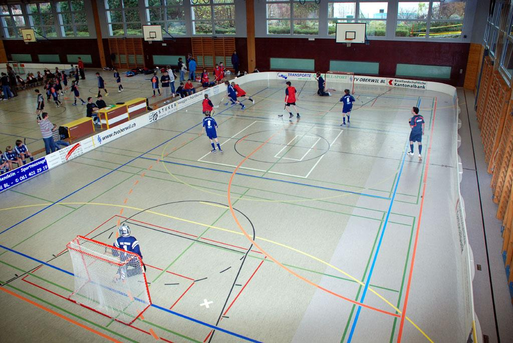

Petiterrain
Le petit terrain est entouré d'une bande arrondie qui doit avoir une hauteur de 50 cm. Le terrain a une longueur de 24 m et une largeur de 14,5 m. Comme pour le grand terrain, il doit y avoir un espace de chute de 50 cm. Deux terrains au maximum peuvent être installés dans une salle.